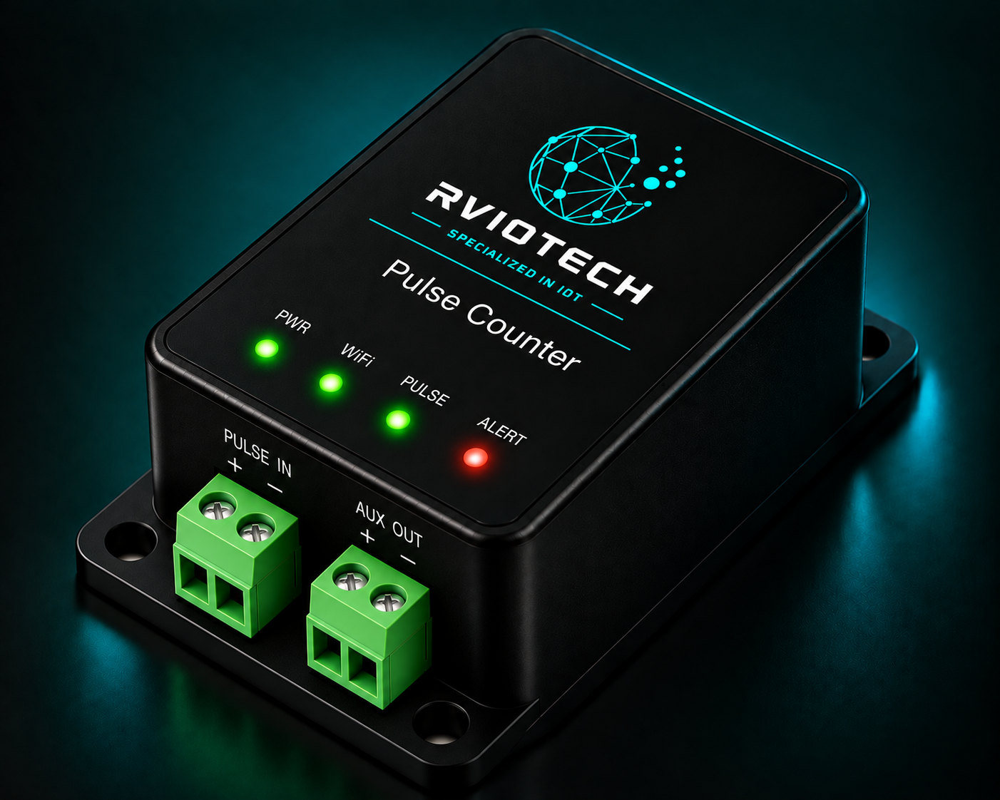

Concept image. Final product design may vary.
Pulse
Counter
A compact pulse counting solution designed to capture pulse outputs from meters, sensors and equipment and convert them into usable data for monitoring and IoT applications.
ENQUIRE ABOUT THIS PRODUCT →From Pulse Output to Digital Data
The pulse counter receives pulse signals from a meter, sensor or machine, counts the incoming pulses and provides the accumulated count for local or remote monitoring.
Capture Pulse-Based Measurements Automatically
Many meters and equipment provide measurement information through pulse outputs. A dedicated pulse counter captures these signals and converts them into count data that can be monitored, recorded and integrated with IoT systems.
- Digital pulse counting
- Compatible with pulse-output devices
- Accurate cumulative counting
- Configurable pulse input
- Local or remote monitoring
- IoT connectivity options
- Data logging and transmission
- Suitable for industrial and utility applications
Where It Can Be Used
Built for Pulse-Based Monitoring
- 01 Converts pulse signals into usable data
- 02 Continuous cumulative counting
- 03 Suitable for existing pulse-output meters
- 04 Enables remote monitoring
- 05 Supports IoT integration
- 06 Scalable for multiple monitoring points
Turn Pulse Outputs Into Useful Data
Capture, count and monitor pulse-based measurements from meters and equipment.